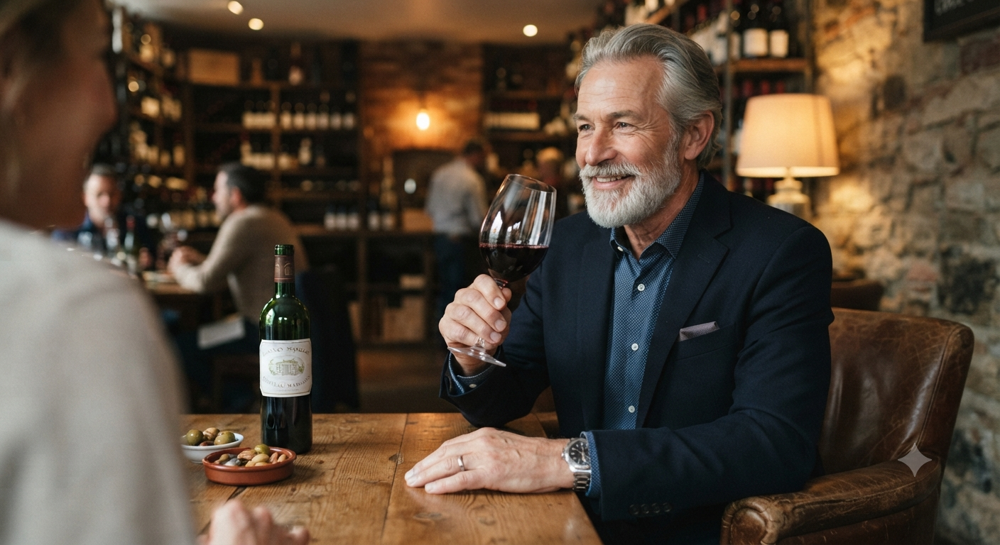

Ecosystem Building
Creating a singular, authentic Sicilian experience where Divino serves as the introduction and Ambrosia as the core experience.
Reserve your place for an event experience that explores tastings, memberships, and the Ambrosia experience.
Whether you are planning a tasting, exploring memberships, or learning more about Ambrosia, this is the fastest way to connect directly with the team.
Divino is not merely a bar; it is an interrogation of the Sicilian soil. Our urban cellar holds the secrets of volcanic slopes and ancient coastal vines, presented in a space designed for deep contemplation.
"Our mission is to bridge the gap between the rugged, fertile volcanic peaks of Mount Etna and the refined, salty breeze of the Tyrrhenian coast."
Step inside our sanctuary in the heart of Cefalù. Designed with raw basalt and warm Mediterranean oak, our cellar provides the perfect quiet atmosphere for discovery.
From a first encounter with our cellar to a lasting relationship with Sicily itself, our long-term ambition is to create a deeper, more meaningful experience for every guest.
Creating a singular, authentic Sicilian experience where Divino serves as the introduction and Ambrosia as the core experience.
Transforming visitors into long-term members and “ambassadors for Sicily” who stay connected to our land and projects year-round.
Moving beyond simple commerce to focus on Mediterranean lifestyle values—hospitality, sustainability, education, and community.
Becoming a leading destination where wine, agriculture, food, and human connection create unforgettable, life-long memories for our guests.
Nature will dictate our calendar. Rather than organising random events, every month should celebrate one of the Mediterranean's traditional crops.
Spring Festival
Wild herbs
Annual tradition
These gatherings are designed to become annual traditions that people actively look forward to attending, shaped by the season and the land.
Season-led
Each month follows a single crop or ritual rooted in the Mediterranean.
Community-driven
The events gather growers, cooks, musicians, and guests into one shared celebration.
Explore our most common questions about the tasting experience, the wines we serve, and how Sicily's terroirs shape every glass.
Expect a curated journey through Sicilian terroirs. Our tastings focus on volcanic Etna reds, heritage Nero d'Avola, and crisp coastal whites with a strong sense of place.
We select wines that tell a story: the ash and minerality of Etna, the warm fruit of the inland valleys, and the saline freshness from Cefalù's nearby shorelines.
Yes. Our tasting experiences are designed for balance, letting you compare the intensity of reds with the crispness of coastal whites and aromatic Sicilian rosés.
Sicilian wine combines volcanic energy, Mediterranean sunlight, and ancient grape varieties. At Divino, you'll taste the contrast between Etna's mineral depth and the sea-salt brightness of the coast.
Bring the flavors of Divino home with curated bottles from our urban cellar. Discover the wines that define our tasting experiences.
Aged Nero d’Avola from the volcanic slopes of Etna, bright with red fruit and volcanic minerality.
A crisp Grillo blend with saline notes, citrus peel, and a cool Mediterranean finish.
Sun-soaked Nero d’Avola with dark cherry intensity, leather spice, and a structured palate.
A fragrant blend of Zibibbo and local aromatics, ripe with orange blossom and seaside freshness.
Real feedback from guests who stopped by Divino Urban Cellar for wine, tasting and a warm Sicilian welcome.
5/5 · 2 weeks ago
This place is incredible! The owner Massimo is so knowledgeable and personable. The wines offered are incredibly delicious and priced very well. The atmosphere is exactly what you want for a tasting experience in Cefalù.
5/5 · 3 weeks ago
Such an amazing place and our favorite spot in Cefalù now! We came in on a Monday even though wine tasting service is Thursday-Sunday. They kindly accommodated us and made every detail feel special.
5/5 · a month ago
We already loved Sicily. We didn’t think it was possible to love it more. Then we walked into Divino Urban Cellar and found a place as warm and memorable as the territory itself.
5/5 · 3 months ago
We had a very short visit to Cefalù recently and popped in to see what the place was like under the new ownership. What a transformation! The service is friendly and the wine selection is exceptional.
5/5 · 3 months ago
Absolutely adore this wine shop. They have an incredible curation of wines (with a focus on Sicilian) plus they’ve kept the very affordable tap wine - a perfect mix of quality and personality.
Massimo brings Sicilian hospitality, wine expertise, and a storyteller’s eye to every tasting. His passion for local growers and volcanic wines has shaped Divino into a place where every sip feels personal.
From carefully selected Etna reds to coastal whites and rare olive oils, Massimo curates a menu built on authenticity, warmth and unforgettable moments. He welcomes both seasoned wine lovers and first-time visitors with equal care.

Explore an open-source interactive map centered on Cefalù, Sicily, with a marker at the town center.
Receive the latest news from Divino and Ambrosia, along with exclusive updates, invitations, and stories from Sicily.
Members will receive privileged access to a curated world of Sicilian products, experiences, and traditions rooted in hospitality, craft, and seasonality.
Limited products and early releases reserved for members.
Curated seasonal product boxes delivered throughout the year.
Olive oil from the annual harvest and carefully selected wines.
Handmade natural cosmetics inspired by local ingredients and traditions.
Preserves and other authentic Mediterranean delicacies.
Invitations to harvest festivals, online cooking classes, and virtual wine tastings.

Via Gibilmanna, 16
90015 Cefalù PA, Italy
+39 335 842 6107
divinocefalu.com
Daily: 16:00 - 21:00
Choose an experience
Select the experience you’d like to explore and we’ll open the booking page for you.